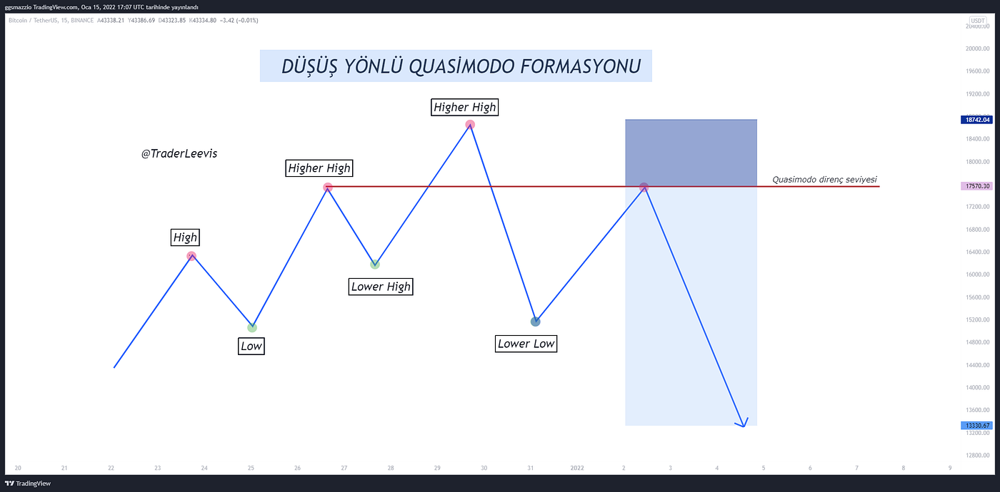

Bayrak Formasyonu Nedir?
Bayrak formasyonu, teknik analizde fiyatın güçlü bir hareketten sonra kısa bir düzeltme yaparak dinlendiğini ve ardından aynı yönde devam etme eğiliminde olduğunu gösteren bir devam formasyonudur. Bu formasyon, genellikle yüksek hacimli sert bir fiyat hareketinden sonra oluşur.
Bayrak formasyonu, bir direk (flagpole) ve bir bayrak (flag) kısmından oluşur: Direk: Güçlü ve dik fiyat hareketidir (yukarı ya da aşağı). Bayrak: Bu hareket sonrası oluşan kısa süreli konsolidasyon (sıkışma/düzeltme) alanıdır. Genellikle paralel iki çizgi arasındadır.
Bayrak Formasyonu Ne İşe Yarar?
Bayrak Formasyonu Kuralları
Takoz Nedir?
Takozlar, iki trend çizgisi arasında giderek daralan fiyat hareketlerini temsil eder. Bu çizgiler birbirine yaklaşır ve fiyat bu yapı içinde sıkışır. Sonunda, fiyat bu sıkışmadan yukarı veya aşağı yönlü kırılır.
Takoz Türü Görünüm Anlamı
Yükselen Takoz (Rising Wedge): Hem alt hem üst çizgi yukarı eğimli Genellikle düşüş sinyali verir (bearish reversal)
Alçalan Takoz (Falling Wedge): Hem alt hem üst çizgi aşağı eğimli Genellikle yükseliş sinyali verir (bullish reversal)
Takozlar Ne İşe Yarar?
Fiyat sıkışması ve momentum kaybını gösterir. Kırılım yönünde sert fiyat hareketleri beklenir. Alım/satım fırsatlarını zamanlamaya yardımcı olur. Genellikle diğer indikatörlerle birlikte kullanıldığında daha güvenilir sinyaller üretir.
İkili Tepe ve İkili Dip
İkili Tepe ve İkili Dip, teknik analizde en yaygın kullanılan dönüş formasyonlarıdır. Fiyatın bir trend yönünde ilerledikten sonra zayıfladığını ve ters yöne dönebileceğini işaret ederler. Basit yapıda olmaları, hem yeni başlayanlar hem de profesyoneller tarafından sıkça kullanılmalarını sağlar.
İkili Tepe (Double Top) Nedir? (İkili dip ise tam tersidir.)
İkili tepe, bir varlığın fiyatının iki kez aynı zirveye ulaşması ama bu seviyeyi kıramayıp düşüşe geçmesiyle oluşur.
Kurallar:
Sebebi Nedir?
Alıcılar iki kez denemesine rağmen fiyatı yukarı taşıyamamıştır.Böylece güç kaybı ve ayıların devreye girdiği anlamına gelir. Yani Trend dönüş sinyali verir: Yukarı trend → aşağı trend.
Omuz-Baş-Omuz (OBO) formasyonu
teknik analizde bir trend dönüş formasyonudur. Genellikle bir yükseliş trendinin sonunda oluşur ve fiyatların düşeceğini işaret eder. Bu formasyon, yatırımcı psikolojisindeki güç kaybını gösterir: alıcıların momentum kaybettiği ve satıcıların kontrolü ele aldığı bir süreci temsil eder.
OBO Nedir?
"Omuz-Baş-Omuz", fiyat grafiğinde üç zirveden oluşur: Sol Omuz (O): İlk zirve, sonra kısa bir düzeltme. Baş (B): En yüksek tepe, ardından yeniden düzeltme. Sağ Omuz (O): İlk omuza benzer yükseklikte ikinci zirve. Boyun Çizgisi (Neckline): İki düzeltme dibini birleştiren yatay ya da eğimli çizgi. Kırılım boyun çizgisi altına olursa düşüş başlar.
Notlar
Quasimodo Formasyonu
Quasimodo Kimdir ?
Quasimodo (Türkçe okunuşu Kazimodo) ağır fiziksel sorunlarla birlikte doğmuştur. Hugo, Quasimodo'nun sağ gözünü kapatan iri bir siğilden başka sırtında da kambur olduğunu tasvir eder. 4 yaşına doğru ebeveynleri tarafından Notre Dame Katedrali'nin merdivenlerinde terkedilmiştir, çirkinliği sebebiyle kimse almak istemeyince rahip Claude Frollo tarafından evlat edinilmiş ve Claude Frollo, paskalya sonrası ilk pazar günüyle ilgili olarak adını Quasimodo koymuştur. Büyüyünce katedralin çanlarını çalmakla görevlendirilen Quasimodo çan sesleri yüzünden zamanla sağır olur. Sürekli çirkinliğiyle alay eden halkın içine karışmaktan hiç hoşlanmaz. Zamanla insanların her söylediğini bir alay veya lanet saymaya başlamış, insanlara duyduğu kin her gün büyümüştür. Sağırlığı sebebiyle sadece yalnız kaldığında bozduğu bir suskunluğa gömülmüştür. Notre Dame Katedrali'nin çan kulesi en sevdiği yerdir. Marie adını verdiği büyük çan en büyük neşe kaynağı ve sevgilisidir.
Quasimodo Formasyonu nedir ?
Quasimodo Formasyonu (QM), teknik analizde kullanılan ileri düzey bir dönüş formasyonudur. Klasik formasyonların aksine daha gizli ve erken sinyaller verir. Trendin dönüşünü yüksek doğrulukla işaret eder ve özellikle likidite yakalama ve manipülasyon bölgelerini tespit etmekte kullanılır.
Quasimodo, bir trend içinde aşağıdaki yapıyı arar: